1Что умеет Римора
Римора считает сметы ресурсно-индексным методом по Методике 421/пр. Работает в браузере: ничего не нужно устанавливать.
| Что внутри | Подробно |
|---|---|
| Нормы | ФСНБ-2022 из открытых данных ФГИС ЦС, дополнение № 19: 56 242 расценки сборников ГЭСН, ГЭСНм, ГЭСНмр, ГЭСНп и ГЭСНр. Справочник ФСБЦ: 43 607 материалов, 1 729 машин и механизмов, 2 240 позиций оборудования (классы 61–77). |
| Цены | ФГИС ЦС по всем 86 субъектам и 148 ценовым зонам, 15 кварталов с 1 кв. 2023 по 3 кв. 2026, и базисный уровень на 01.01.2022. За 2023 год ФГИС ЦС публиковал цены не по всем зонам. Цены перевозки автотранспортом есть по всем зонам за те же 15 кварталов. Если текущей цены ресурса нет, берётся базисная цена и индекс группы однородных ресурсов за квартал сметы. |
| Укрупнённые нормативы и ПИР | Все 23 сборника НЦС-2026 (Методика 314/пр, 6 857 показателей). Смета на проектные работы по Методике 707/пр: 16 сборников нормативов затрат и 9 справочников базовых цен. |
| НР и СП | Приказы 812/пр и 774/пр, нормативы подбираются по виду работ расценки. Графа территории: обычная, МПРКС, Крайний Север. |
| Документы | ЛСР по форме приложения 3, ресурсная ведомость, КС-2 и КС-3, ОСР, ССРСС, смета на проектные работы (формы 2п и 3п), НМЦК с протоколом. Excel, печать и PDF. |
| Для экспертизы | XML по схемам Минстроя: ЛС РИМ 3.01, ВОР 3.01, ОСР и ССРСС 3.01, пояснительная записка 4.01. Пакет из пяти файлов одним архивом. |
Все суммы считает программа. Помощь ИИ только объясняет, подбирает расценки и отвечает на вопросы по нормативам.
2Запуск и знакомство
Как открыть
По ссылке. Откройте адрес, который вам прислали, в Chrome, Яндекс Браузере или Edge. Программа спросит код доступа. Браузер его запомнит. Первая загрузка базы занимает несколько секунд.
На Mac. В папке release дважды щёлкните «Запустить Римору.command». Откроется окно Терминала и браузер с программой. Пока работаете, окно Терминала не закрывайте: в нём работают программа и Помощь ИИ. Если macOS пишет, что не может проверить разработчика, щёлкните файл правой кнопкой, выберите «Открыть» и подтвердите.
Знакомство при первом запуске
В первый раз программа сама покажет главное за шесть шагов: каталог норм, строку параметров, ленту, таблицу сметы, карточку позиции и поиск команд. Кнопки Дальше и Пропустить, клавиша Esc закрывает подсказки. Повторить знакомство: Справка → Знакомство с программой.
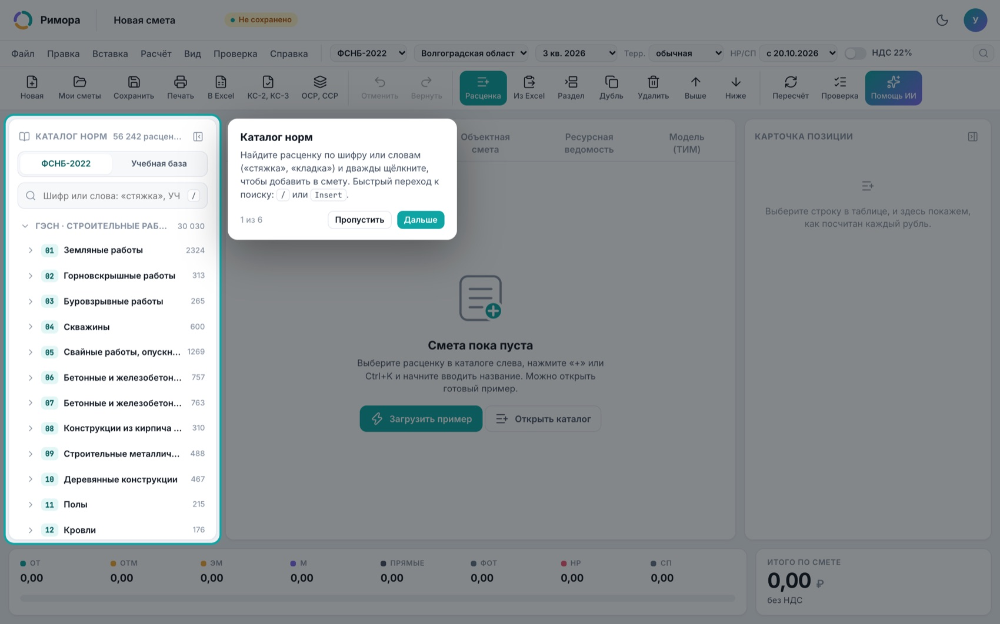
3Окно программы
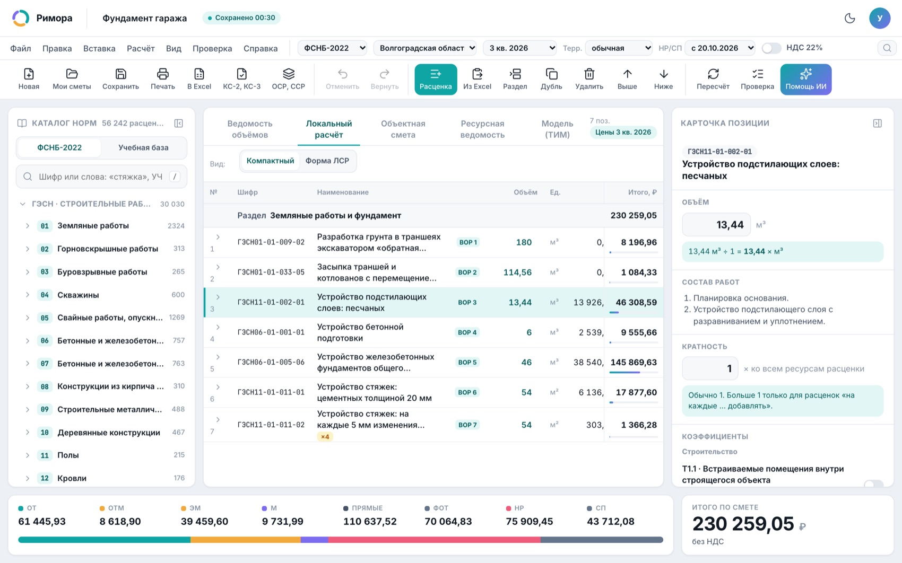
| Часть окна | Для чего |
|---|---|
| Строка меню и параметров | Меню «Файл», «Правка», «Вставка», «Вид», «Расчёт», «Проверка», «Справка». Рядом параметры сметы: база, регион и зона, уровень цен, территория, редакция НР и СП, НДС. |
| Лента | Кнопки частых действий: новая смета, мои сметы, сохранить, печать, Excel, коэффициенты, ОСР и ССР, вставка из Excel, раздел, дубль, вверх и вниз, пересчёт, проверка, Помощь ИИ. Клавиша видна в подсказке у каждой кнопки. |
| Каталог слева | Сборники, разделы, таблицы и расценки, строка поиска. Сворачивается кнопкой в заголовке. |
| Таблица в центре | Вкладки «Ведомость объёмов», «Локальный расчёт», «Объектная смета», «Ресурсная ведомость», «Модель (ТИМ)». Над локальным расчётом переключатель вида: «Компактный» или «Форма ЛСР». |
| Карточка справа | Как посчитана выбранная позиция: объём, ресурсы, коэффициенты, прямые затраты, ФОТ, НР и СП с процентами и строкой приказа. Сворачивается вправо. |
| Итоги внизу | Плитки ОТ, ОТм, ЭМ, М, оборудование, перевозка, прямые затраты, ФОТ, НР, СП и итог. В строке состояния метки «К сметы», «Давальческие», «Экспертиза» и значок сохранения. |
Если свернуть каталог и карточку, таблица займёт почти весь экран. Программа рассчитана и на ноутбук с экраном 1366×768: подписи в строке параметров становятся короче, ничего не уходит за край. Тёмная тема включается кнопкой с луной справа вверху.
Вкладки смет
Над таблицей строка вкладок, как в браузере. В каждой вкладке своя смета со своей историей отмен. + открывает новую смету в новой вкладке, крестик или щелчок колёсиком мыши закрывает вкладку, смета при этом остаётся в «Моих сметах». Оранжевая точка значит, что смета ещё не сохранена в «Мои сметы»: перед закрытием такой вкладки программа спросит. Метка «ПИР» или «НЦС» показывает вид документа. Если навести мышь на вкладку, видны стройка и объект. После перезагрузки страницы сохранённые сметы снова открываются вкладками.

4Мои сметы, облако, перенос

Сохранение
Сметы хранятся в браузере на вашем компьютере. Первый раз нажмите Ctrl S и задайте название, дальше изменения записываются сами. В окне «Мои сметы» список смет с регионом, ценами, числом позиций и суммой: открыть, сделать копию, удалить, найти по названию.
Стройки и объекты
Слева в «Моих сметах» дерево: «Все документы», стройки с объектами и «Без стройки». В объекте лежат его документы: локальные сметы, ведомости объёмов, сметы на проектные работы, расчёты по НЦС и другие.
- Нажмите + Стройка и введите название. Программа сразу создаст «Объект 1».
- Выберите объект слева и нажмите + Документ. Откроется выбор «Что составляем?». Новый документ откроется во вкладке и сразу сохранится в этом объекте.
- Готовую смету можно перенести: кнопка Перенести в строке сметы, затем выберите стройку и объект или «Без стройки».
- Кнопка + Объект у стройки добавляет объект. Переименовать меняет название стройки или объекта во всех его документах. Удалить можно только пустую стройку или пустой объект, сами документы так не удаляются.
Над списком видна сумма документов стройки или объекта без НДС. Стройка и объект записаны в самих сметах, поэтому облако переносит их на другие устройства вместе со сметами. Пустая стройка без документов видна только в этом браузере.
Облако
- В «Моих сметах» нажмите Включить облако. Программа выдаст личный ключ, почта и пароль не нужны.
- Каждое сохранение уходит в облако. Значок сохранения показывает «в облаке», «в облако…» или «без облака».
- Чтобы работать на другом компьютере, нажмите Подключить другое устройство и откройте ссылку или QR-код на втором устройстве.
Сметы с другого устройства подтягиваются при запуске, при возврате на вкладку и раз в две минуты. Если одну смету правили на двух устройствах сразу, сохраняются обе версии: чужая лежит рядом копией «(с другого устройства)». Без интернета сметы копятся в браузере и уходят в облако, когда связь появится.
Одна смета на другое устройство или коллеге
Файл → На другое устройство (ссылка, QR) упаковывает смету в ссылку. Тот, кто откроет ссылку, получит копию в свои «Мои сметы». На сервер при этом ничего не уходит. QR показывается для смет примерно до 25 позиций, для больших только ссылка.
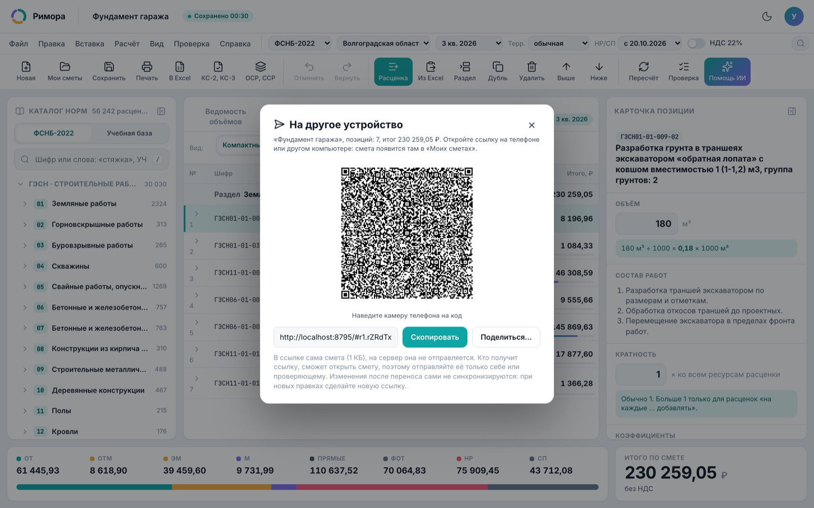
Ещё один способ: Текущую в файл сохраняет смету файлом .smeta.json, Открыть из файла загружает его обратно.
5Новая смета и шаблоны
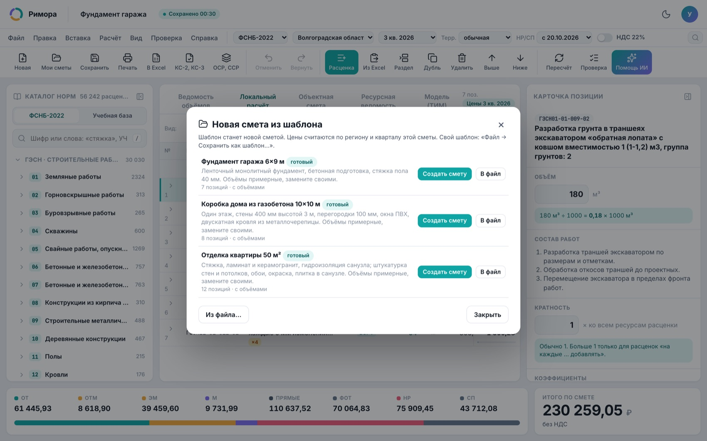
Новая смета (Alt N) спрашивает, что составляем: локальный сметный расчёт, ведомость объёмов, смету из шаблона, смету по модели ТИМ, смету на проектные работы, расчёт по НЦС-2026, НМЦК, ОСР и ССРСС или пример. Если в окне уже открыта смета, новая откроется в новой вкладке.
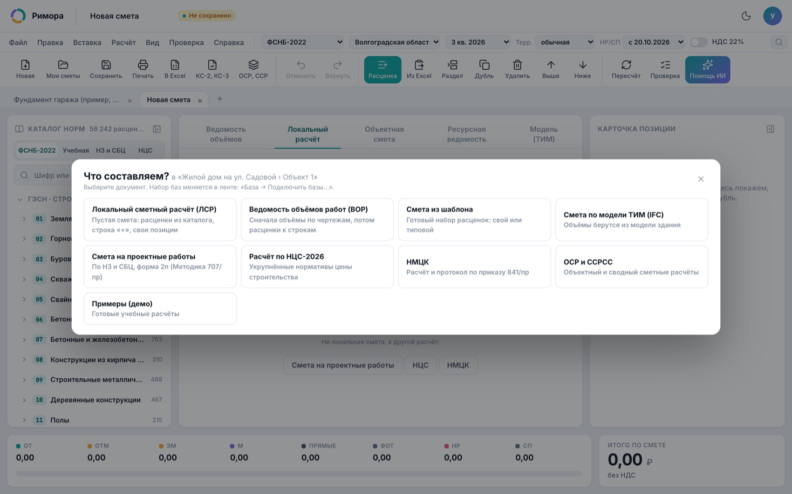
Все виды документов видны всегда. Если нужная база не подключена, например НЗ и СБЦ для проектных работ, документ всё равно создаётся, а в каталоге слева появится кнопка Подключить базу.
Файл → Новая смета из шаблона начинает с готового набора позиций. Есть три готовых шаблона:
- «Фундамент гаража 6×9 м»: 7 позиций;
- «Коробка дома из газобетона 10×10 м»: стены, перегородки, окна, двери, стропила, обрешётка, металлочерепица, 8 позиций;
- «Отделка квартиры 50 м²»: стяжка, гидроизоляция, плитка, ламинат, штукатурка, обои, окраска, 12 позиций.
Объёмы в готовых шаблонах примерные, замените их своими. Неучтённые материалы (блоки, металлочерепица, обои) выбираются в карточке позиции, см. раздел 9.
Свои шаблоны
- Файл → Сохранить как шаблон: вся смета или только выделенные строки, с объёмами или без, название и комментарий.
- Вставка → Из шаблона добавляет строки шаблона после выбранной строки. Цены считаются по региону и кварталу текущей сметы.
- Шаблон можно сохранить в файл .rimora-tpl.json и отдать коллеге, он загрузит его кнопкой «Из файла».
Разделы, расценки, материалы, конъюнктурный анализ и перевозка сохраняются в шаблоне вместе с коэффициентами. Привязки к ведомости объёмов не переносятся.
6База, регион, квартал, НР и СП, НДС
Все параметры сметы стоят в одной строке над лентой. Поменяли параметр, смета пересчиталась.
| Параметр | Что выбрать |
|---|---|
| База | ФСНБ-2022 (дополнение № 19). Учебная база нужна только для учебных заданий с готовым ответом. |
| Регион | Любой субъект РФ. У края или области с несколькими ценовыми зонами появляется список зон. |
| Цены | Квартал ФГИС ЦС этой зоны (1 кв. 2023 – 3 кв. 2026) или базис 01.01.2022. Цены зоны загружаются при выборе. |
| Территория | Обычная, МПРКС или Крайний Север: от неё зависят нормативы НР. |
| НР/СП | Редакция приказов 812/пр и 774/пр: «с 20.10.2026» или «до 20.10.2026». |
| НДС | Переключатель добавляет НДС 22 % к итогу сметы и в выходные формы. |
Вспомогательные ненормируемые материалы для ГЭСНм начисляются автоматически, 2 % от ОТ (п. 75 «а» Методики 421/пр). Они видны отдельной строкой в форме ЛСР.
7Как найти и добавить расценку
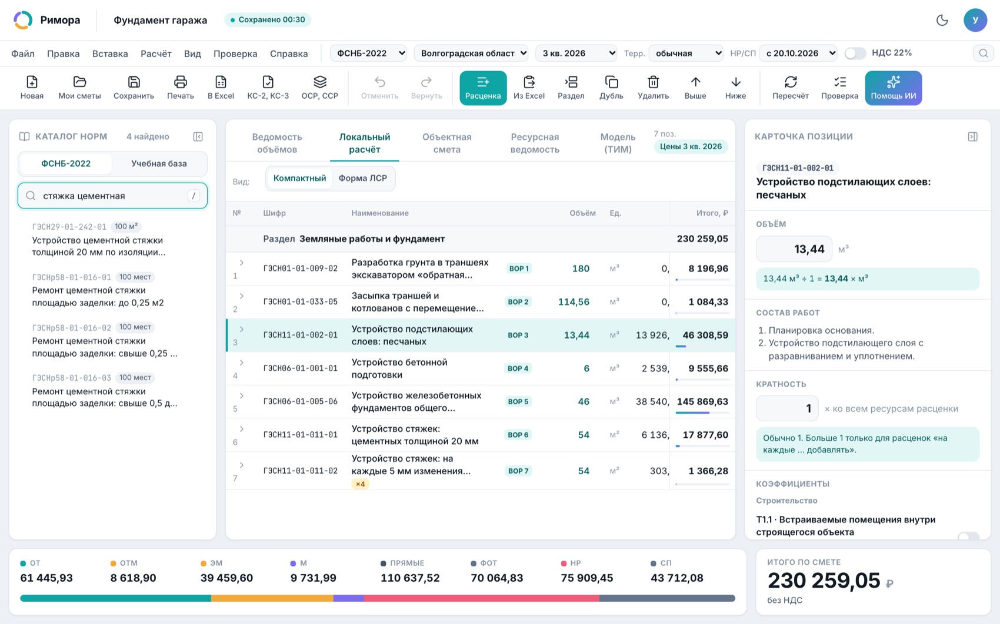
- Нажмите / или Insert: курсор встанет в поиск каталога.
- Введите шифр (01-01-018-05) или слова из названия («стяжка цементная»). Окончания не важны.
- Щёлкните расценку. Она встанет в смету после выбранной строки, курсор сразу окажется в поле объёма.
- Введите объём и нажмите Enter.
Каталог можно листать и деревом: сборник, раздел, таблица, расценка. Раздел сметы добавляет кнопка Раздел (Alt R).
Палитра команд

Ctrl K открывает строку, где ищутся и расценки, и любые команды: «перевозка», «оборудование», «НМЦК», «экспертиза». Стрелками выберите строку, Enter выполнит команду или добавит расценку.
8Вставка списка из Excel
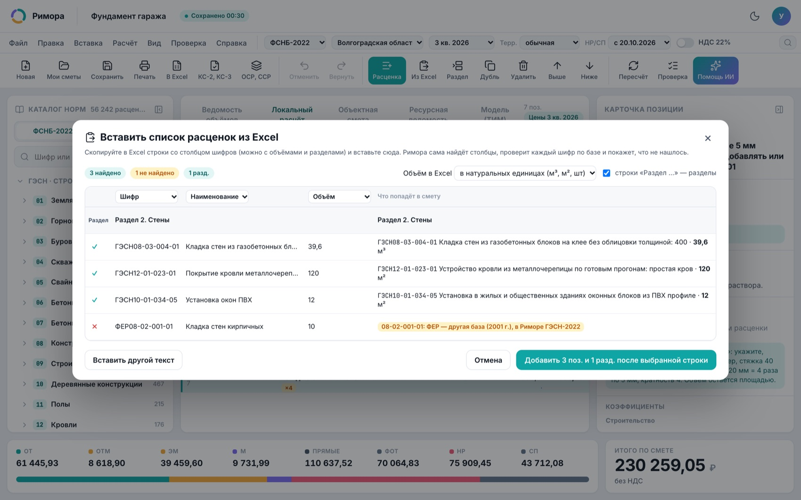
Если перечень работ уже есть в Excel или в выгрузке другой программы, его не нужно набирать заново.
- Скопируйте строки в Excel: шифр, наименование, объём.
- В Риморе нажмите Ctrl V в смете или кнопку Из Excel на ленте (Alt V).
- Программа сама найдёт столбцы шифра, объёма и наименования. Если ошиблась, переназначьте столбец в шапке предпросмотра.
- Посмотрите отметки: ✓ найдено, ✗ нет в ФСНБ-2022, ✗ ФЕР (другая база). Нажмите Вставить.
Шифры понимаются в любом виде: «ГЭСН01-01-009-08», «01-01-009-08», «ГЭСНм08-…», с «_» на конце. Строки «Раздел …» становятся разделами. Объём можно дать в натуральных единицах или в единицах расценки. Позиции без объёма вставятся с нулём, проверка сметы их покажет. Вся вставка отменяется одним Ctrl Z.
9Объём, ресурсы, неучтённые материалы
Объём
Объём вводится в единицах проекта: м³, т, м². Программа сама переводит его в единицы нормы, в карточке видно как: 63,45 м³ ÷ 1000 = 0,0635 × 1000 м³. В поле можно написать формулу, например 12*3,5+4, рядом с числом появится значок ƒ. Кратность нормы (толщина слоя, число раз) задаётся в карточке, в таблице видна метка «×4».
Ресурсы позиции
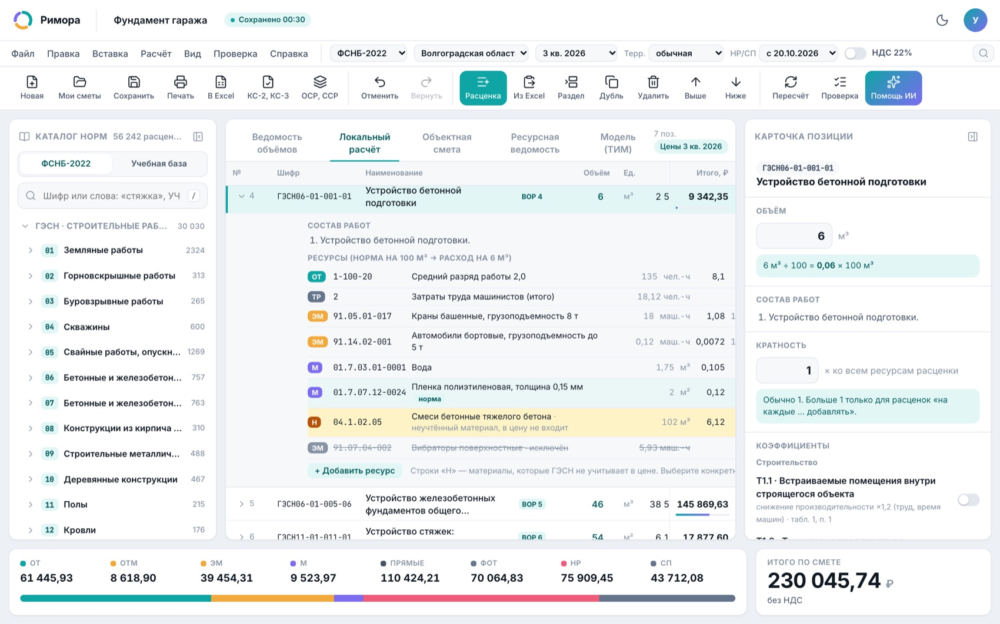
Стрелка слева от номера строки раскрывает позицию. У каждого ресурса видны норма, расход на ваш объём, цена, откуда цена (ФГИС ЦС или базис с индексом) и сумма. Ресурсы можно править:
| Кнопка | Что делает |
|---|---|
| ⇄ | Заменить материал или машину на другой из ФСБЦ. |
| поле нормы | Своя норма, в том числе вместо «П». |
| ⊘ | Исключить ресурс. Он останется в списке зачёркнутым, кнопка «Вернуть». |
| ↺ | Вернуть как в ГЭСН. |
| + Добавить ресурс | Любой материал или машина из ФСБЦ-2022, поиск по коду и словам. |
| Д | Отметить материал как давальческий (см. раздел 12). |
| >30 км | Перевозка этого материала сверх 30 км (см. раздел 14). |
Изменённые строки подсвечены и помечены: «замена», «норма», «выбран», «добавлен». В подсказке видно, что было.
Неучтённые материалы «Н»
В ГЭСН у многих расценок основной материал не учтён: бетон в бетонной подготовке, блоки в кладке, обои в оклейке. Римора показывает такие строки жёлтым. Нажмите Выбрать: откроется список материалов группы с ценой ФГИС ЦС, норма подставится из ГЭСН. Пока материал не выбран, проверка сметы об этом напомнит.
Карточка позиции

Карточка справа показывает расчёт по шагам: объём, состав работ, коэффициенты, ОТ, ЭМ, М, прямые затраты, ФОТ, НР и СП с процентами и строкой приказа. Здесь же вид работ для НР и СП, кратность, коэффициенты и кнопки оборудования и перевозки.
Если в позиции что-то вызывает сомнение, в строке появляется знак ⚠ с числом замечаний. Наведите на него мышь.
10Коэффициенты
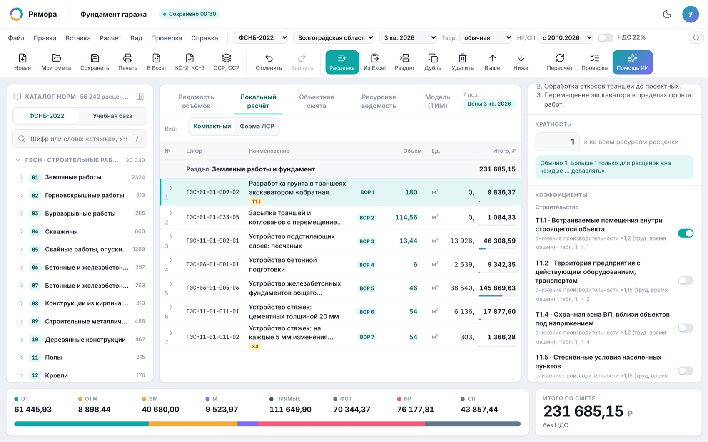
К одной позиции
Коэффициенты включаются переключателями в карточке позиции. Они сгруппированы по условиям (строительство, реконструкция, стеснённые условия и другие), у каждого видна таблица Методики 421/пр и к чему он применяется: труд, машины, материалы. Свой коэффициент задаётся кнопкой Свои коэффициенты: обоснование, значения к ОЗП и ТЗ, ЭМ и ЗПМ, МАТ.
На всю смету
- Расчёт → Коэффициенты на всю смету (Alt K).
- Включите коэффициенты из таблиц Методики или добавьте свои с обоснованием.
- Они применятся ко всем позициям по расценкам ФСНБ. На строках появится метка «К сметы», в строке состояния «К сметы: N».
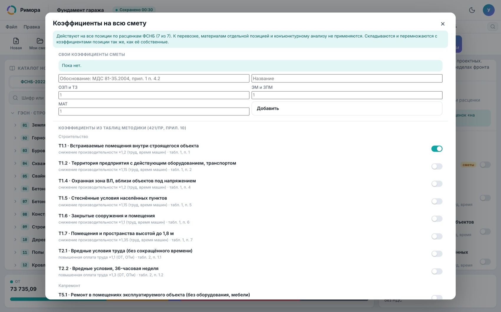
К перевозке, материалам отдельной позицией и конъюнктурному анализу общие коэффициенты не применяются. Чтобы исключить одну позицию, выключите в её карточке «Применять к этой позиции». Одинаковый коэффициент в смете и в позиции учитывается один раз. Коэффициенты производительности по таблице 1 складываются дробными частями, остальные перемножаются.
Обоснование каждого коэффициента выходит строкой в форме ЛСР и в XML.
11Цены и сплит-форма региона
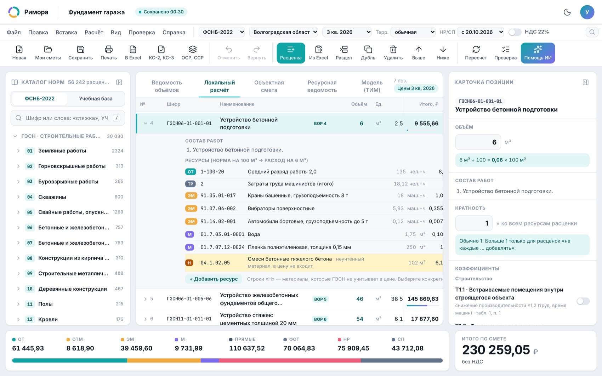
Цена ресурса определяется по порядку:
- текущая цена ФГИС ЦС зоны и квартала сметы;
- если её нет, базисная цена на 01.01.2022 × индекс группы однородных ресурсов за квартал;
- если в зоне не публикуется и индекс группы, материал стоит 0 ₽, и программа требует конъюнктурный анализ.
Источник цены подписан у каждого ресурса в раскрытой позиции и в ресурсной ведомости.

Сплит-форма из Excel
Если у региона вышла новая сплит-форма, а в ФГИС ЦС квартала ещё нет, загрузите её: Файл → Загрузить сплит-форму цен (Excel).
- Файл читается прямо в браузере, на сервер не уходит.
- Из шапки берутся субъект, зона, квартал и письмо Минстроя, они попадут в ЛСР и XML.
- Берутся цены материалов, оборудования, машин, оплаты труда, перевозки автотранспортом, погрузки и разгрузки.
- Группы без индекса выводятся списком: эти ресурсы только по конъюнктурному анализу.
- Если цены ФГИС ЦС этой зоны и квартала в программе есть, окно покажет построчную сверку. Кнопка «Вернуть цены ФГИС ЦС» отменяет сплит-форму.

12Конъюнктурный анализ
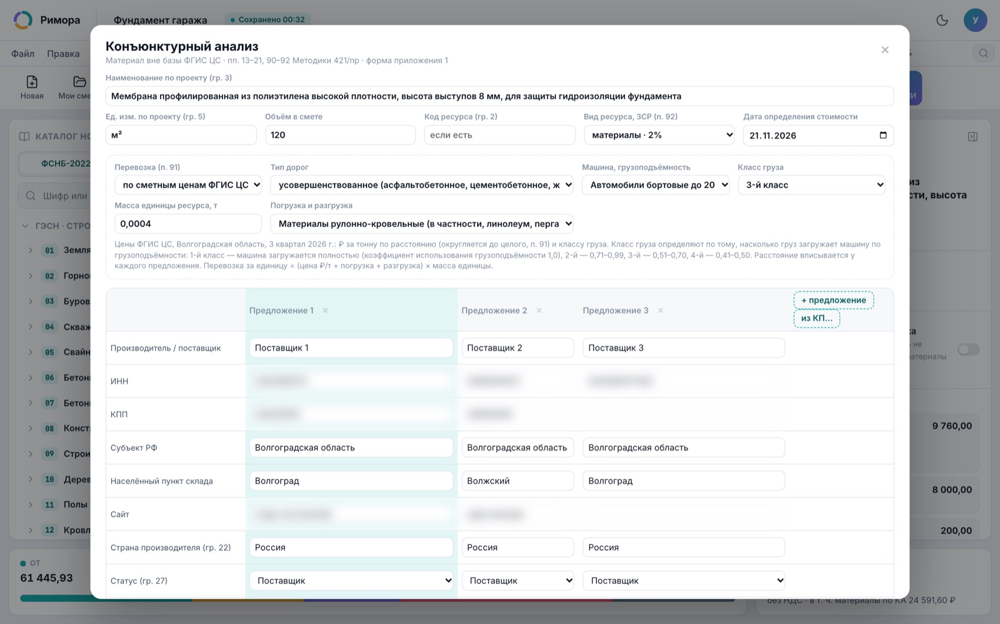
Если материала или оборудования нет в ФСБЦ или цены нет в регионе, цену определяют конъюнктурным анализом.
- Вставка → Материал вне базы (конъюнктурный анализ). Для оборудования: Оборудование вне базы.
- Заполните наименование по проекту, единицу, объём, вид ресурса. Процент заготовительно-складских расходов подставится по виду (для оборудования 1,2 %).
- Внесите предложения поставщиков: название, ИНН, КПП, регион, страна производителя, документ, дата, цена, НДС.
- В смету уйдёт самая низкая цена без НДС.
Программа проверяет ИНН по контрольной сумме, срок документа (не старше 6 месяцев), регион, единицы и число предложений: три, для иностранного оборудования два. Если поставщик единственный, отметьте «Безальтернативный» и напишите, чем это подтверждено. Без страны производителя у предложения будет замечание.
Заполнить из КП
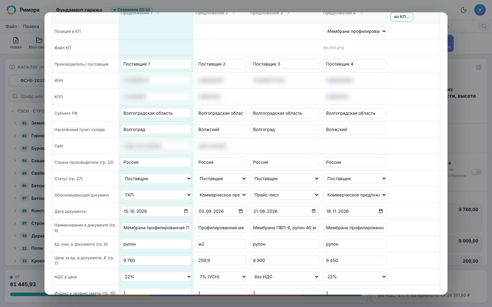
Кнопка из КП… принимает PDF или фото коммерческого предложения, счёта, прайса (до 15 МБ, можно несколько файлов). Помощь ИИ прочитает документ и разложит его по графам: поставщик, ИНН, КПП, регион, страна, дата, наименование, единица, цена, НДС. Если в КП несколько товаров, выберите нужный в строке «Позиция в КП». НДС бывает 22 %, 7 % и 5 % (упрощённая система). Каждое поле сверьте с документом.
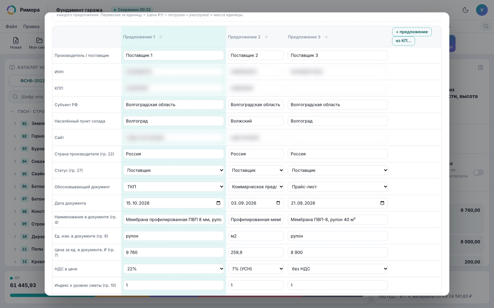
Давальческие материалы
Материалы заказчика отмечаются кнопкой «Д» у ресурса или переключателем «Давальческий материал заказчика» в карточке отдельной позиции. Количество остаётся в смете, стоимость в итог не входит, в ЛСР у строки пометка «давальческий, в стоимость не включён». Список всех давальческих: Вид → Давальческие материалы, его можно выгрузить в Excel.

Форма приложения 1 выгружается в Excel из меню «Файл». В итогах сметы отдельной строкой видно «в т. ч. материалы по конъюнктурному анализу».
13Оборудование
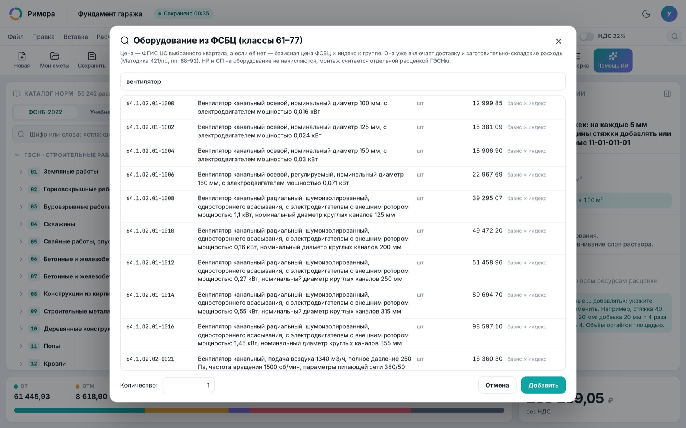
- Добавьте расценку на монтаж (ГЭСНм).
- В её карточке нажмите + Оборудование из ФСБЦ… и найдите позицию в классах 61–77. Или + По конъюнктурному анализу, если оборудования нет в справочнике.
- Оборудование встанет отдельной строкой сразу под монтажом.
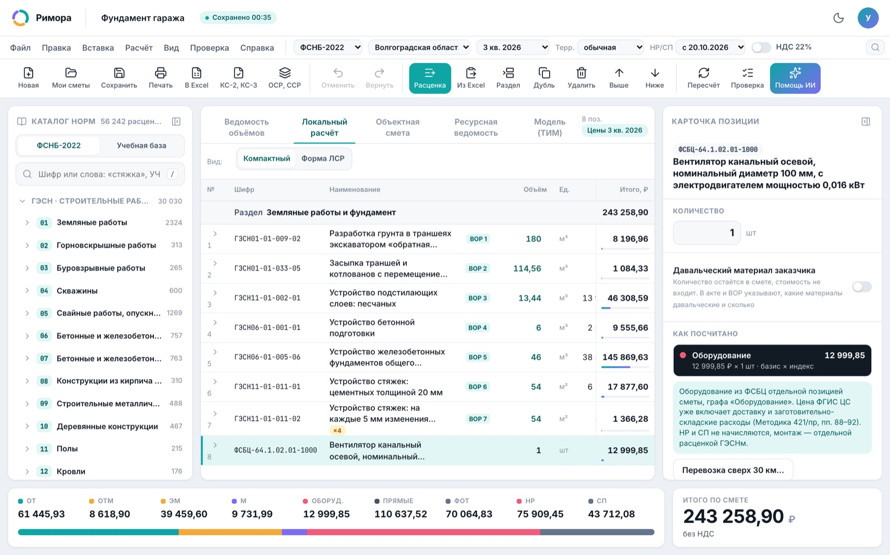
То же есть в меню Вставка → Оборудование из ФСБЦ. НР и СП на оборудование не начисляются. Цена ФГИС ЦС уже включает доставку и заготовительно-складские расходы (пп. 88–92 Методики).
В ЛСР, ОСР, ССРСС и КС-2 оборудование идёт своей графой. В итогах ЛСР видно «ВСЕГО монтажные работы», «ВСЕГО оборудование» и «оборудование, отсутствующее в ФРСН».
14Перевозка, погрузка и разгрузка
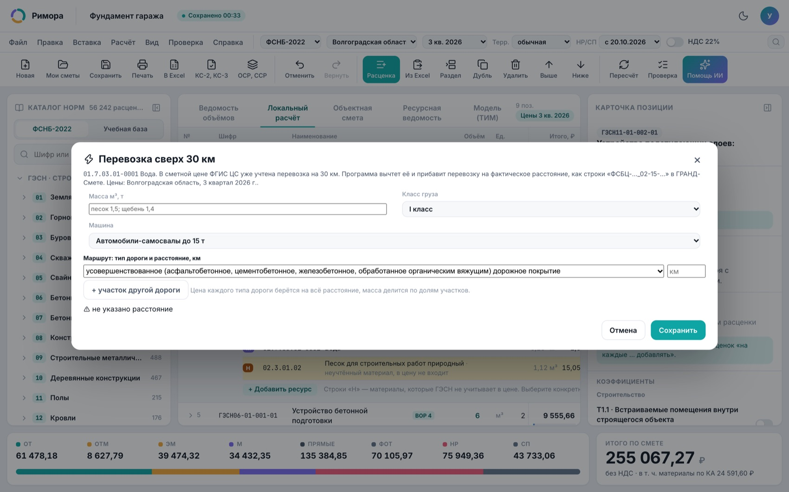
Сверх 30 км у материала
Сметная цена ФГИС ЦС уже включает доставку на 30 км. Если везти дальше:
- У материала в раскрытой позиции нажмите >30 км. У материала отдельной позицией: Перевозка сверх 30 км… в карточке.
- Укажите массу единицы в тоннах (в ФСБЦ массы нет), класс груза, машину и расстояние.
- Программа добавит под материал строку с коэффициентом −1 на 30 км и строку на полное расстояние.
Если дорога разная, нажмите + участок другой дороги: масса разделится по долям участков, на каждый тип дороги своя строка. НР и СП на перевозку не начисляются.
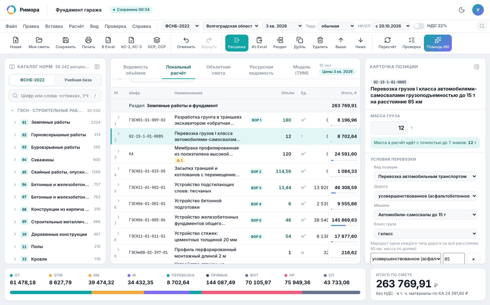
Перевозка отдельной позицией
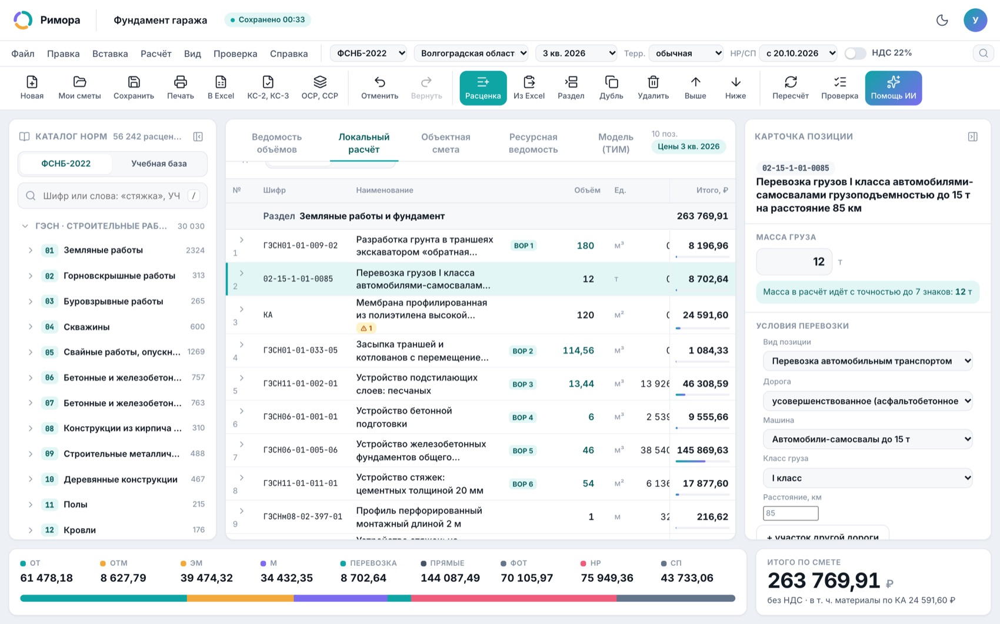
Вставка → Перевозка грузов. Вид транспорта:
- Автомобильный: цены ФГИС ЦС зоны и квартала сметы, по всем 148 зонам, с 1 кв. 2023 по 3 кв. 2026.
- Железнодорожный: группа груза и тип вагона (поиск по 804 названиям ФГИС ЦС) и тарифное расстояние. От станции до объекта нужна ещё автомобильная перевозка.
- Водный и воздушный: цены в ФГИС ЦС нет, по п. 91 Методики их определяют конъюнктурным анализом. Заполните порты и перевозчиков, принимается наименьшая цена без НДС.

Погрузка и разгрузка
Вставка → Погрузка и разгрузка (ФГИС ЦС): груз из 51 группы, операция, масса в тоннах. В итогах идёт статьёй «Перевозка».

15Ведомость объёмов работ
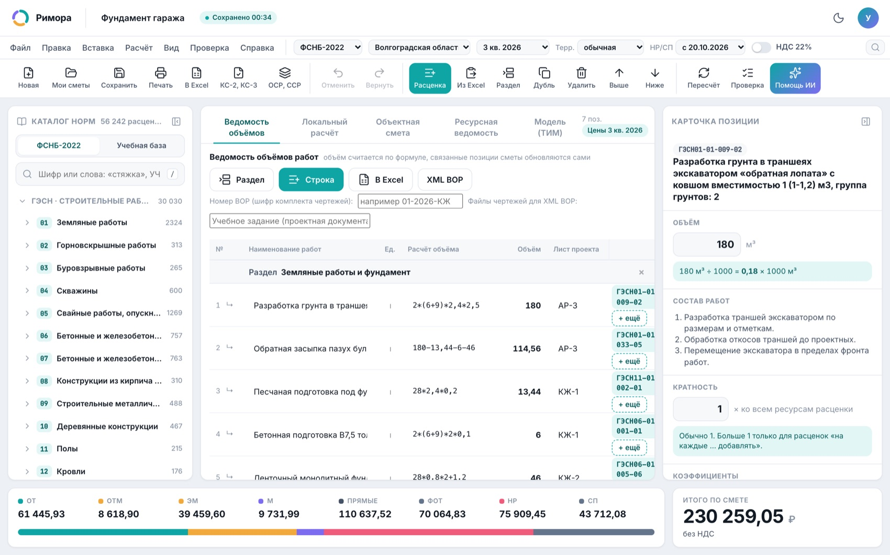
Ведомость объёмов работ (ВОР) обязательна для экспертизы: постановление № 145, п. 13 «г». В Риморе её ведут на вкладке «Ведомость объёмов».
- Заполните строку: наименование работы, единицу без кратности (м³, а не 100 м³), формулу объёма и лист проекта.
- Нажмите Подобрать: программа найдёт расценку по названию строки. Расценка встанет в смету уже связанной со строкой.
- У связанной позиции в смете метка «ВОР N». Поменяли формулу в ведомости, поменялся объём в смете.
Кнопка «↳» у номера делает строку ресурсом работы выше (материал или оборудование), номер станет «N.1». Над таблицей задаются номер ВОР (шифр комплекта чертежей) и имя файла чертежей. Ведомость проверяется: строка без расценки, единицы не совпадают, формула не считается.
Выгрузка: CSV для Excel и XML ВОР по схеме Минстроя 3.01. В XML ЛСР у каждой позиции ставится ссылка на номер строки ВОР.
16ТИМ: смета по модели IFC
Если проектировщик передал информационную модель, объёмы можно взять из неё. Это третий способ получения ВОР по Главгосэкспертизе: модель → программа привязывает нормы к элементам → ЛСР и ВОР получаются параллельно.

Открыть модель
Файл → Открыть модель IFC (ТИМ). Модель читается в браузере, на сервер не уходит. На вкладке «Модель (ТИМ)» элементы сгруппированы по типам и этажам, у каждого объём, площадь, длина. Единицы проекта (мм, см) пересчитываются в м, м², м³. Объём и площадь берутся «нетто», за вычетом проёмов.
Объём из модели в позицию
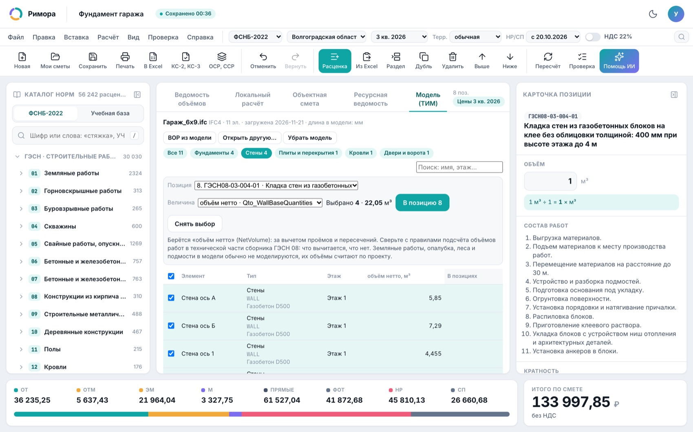
- Выделите позицию в смете. Вкладка «Модель» подхватит её сама.
- Отметьте элементы модели, например четыре стены, и нажмите В позицию.
- В ведомости появится строка с формулой из значений элементов и меткой «из модели: 4 эл., NetVolume», в «Лист проекта» встанет имя файла IFC. У позиции в смете метка «ВОР N · ТИМ».
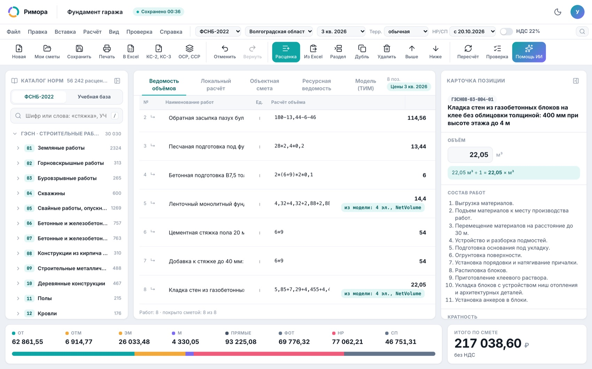
ВОР из модели целиком
Кнопка ВОР из модели группирует элементы по типу и материалу и предлагает величину: фундаменты, стены, плиты по объёму, кровли, окна, двери по площади, трубы и кабели по длине, арматура по массе. Создать строки ВОР добавит раздел «Из модели …». Расценки к строкам подберите на вкладке ведомости: кнопка «ИИ» у строки предложит расценку с учётом материала и толщины.
Проверка по модели

Проверка сметы сравнивает смету с моделью: объём позиции не равен сумме по модели, элементы не попали ни в одну позицию, один элемент учтён дважды в позициях одного сборника. Если открыть новую версию модели, проверка покажет удалённые и изменившиеся элементы и новый объём.
Затраты на ТИМ в главе 9 ССР

В окне «ОСР и ССР» на вкладке «Данные стройки» есть блок «Затраты на ТИМ». Он считает затраты по формулам (7)–(12) Методики 421/пр: продолжительность по ПОС, стоимость лицензий по конъюнктурному анализу, амортизация, зарплата по данным Росстата (ОКВЭД 63.11), индекс инфляции зарплаты. Численность берётся по таблице 3: 5 человек или 7 для особо опасных, технически сложных и уникальных объектов. Итог идёт в главу 9 ССР, строка 2.21 приложения 9. Расчёт виден по строкам формул.
17Работа со строками
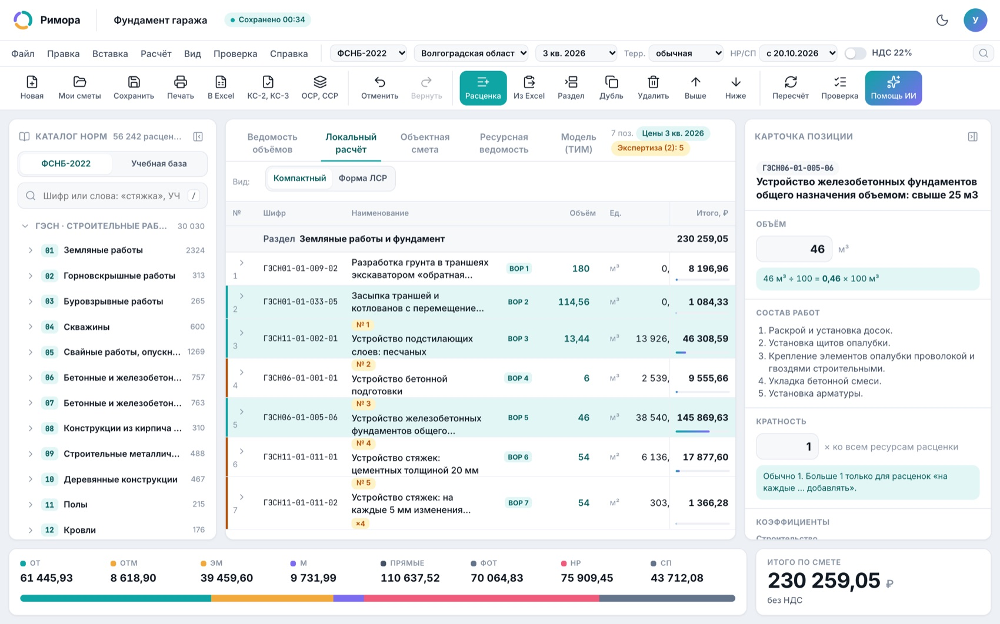
| Действие | Как сделать |
|---|---|
| Выделить несколько строк | Ctrl-щелчок добавляет строку, Shift-щелчок выделяет подряд, Ctrl A все строки, Esc снимает выделение. |
| Копировать, вырезать, вставить | Ctrl C, X, V. Строки вставляются после текущей, можно в другую смету, даже в другой вкладке браузера. В Excel вставляется таблицей. |
| Переставить | Перетащить мышью за номер строки или Alt ↑ / ↓. Выделенные строки переносятся вместе. |
| Дублировать, удалить | Ctrl D, Del. |
| Найти в смете | Ctrl F: по шифру, названию, разделу. Enter следующая, Shift Enter предыдущая. |
| Отменить | Ctrl Z, до 200 действий. Программа пишет, что отменено. Ctrl Y возвращает. |

При копировании связь с ведомостью объёмов снимается, объём остаётся числом.
Вид сметы
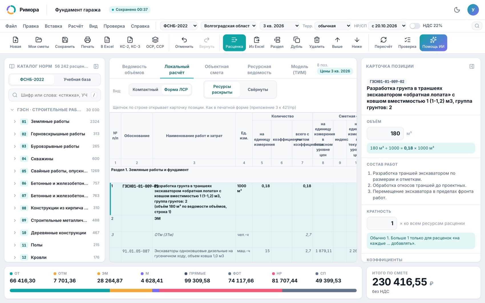
Переключатель над таблицей: «Компактный» или «Форма ЛСР» (Alt L). Форма ЛСР показывает графы 1–12 приложения 3, как на печати: позиция, ресурсы, НР и СП, «Всего по позиции». Щелчок по любой строке выбирает позицию и открывает её карточку. Числа правятся в компактном виде.
Большие сметы работают быстро: смета на 1 137 позиций пересчитывается после правки примерно за 15 мс.
18Проверка сметы
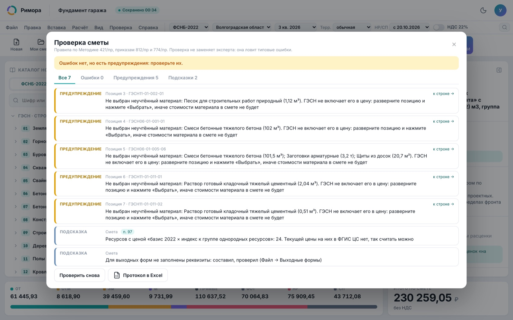
Кнопка Проверка или F7. Программа проверяет смету по правилам Методики 421/пр, среди них:
- объём не задан, у ресурса нет цены, ресурс «П» без нормы, неучтённый материал не выбран;
- неверная строка НР и СП, коэффициент не к той расценке, дубли позиций;
- засыпка больше выемки, пустые разделы и реквизиты;
- связь с ведомостью объёмов, конъюнктурный анализ, перевозка, модель IFC;
- расценки нет в ФСНБ-2022.
Замечания делятся на ошибки, предупреждения и подсказки, у каждого ссылка на пункт Методики. Щелчок по замечанию переводит к строке сметы. Протокол выгружается в Excel.
19Экспертиза сметы
Экспертиза смотрит на смету так, как её смотрел бы эксперт, и выдаёт уведомление с пронумерованными замечаниями. Проверка → Экспертиза сметы или Shift F7.


Три уровня
| Эксперт | Что проверяет |
|---|---|
| Лёгкий | Ошибки проверки сметы, расценки вне ФСНБ-2022, материал учтён дважды, базисный уровень цен. |
| Средний | Плюс предупреждения проверки, коэффициенты без обоснования, конъюнктурный анализ (число предложений, ИНН, страна, перевозка), самосвалы 30 т без ПОС, коэффициент уплотнения щебня и песка, резерв без письма ГРБС. |
| Суровый | Плюс нет ВОР, повышающий коэффициент без документа, коэффициенты приложения 10 без ПОС, пустая пояснительная записка, реквизиты. |
Как работать с замечаниями

- Прочитайте уведомление. Одинаковые замечания по разным позициям сведены в один пункт. У каждого пункта ссылка на Методику и «как исправить».
- В смете у строк появились номера замечаний и полоса слева. Галочка «только строки с замечаниями» или метка «Экспертиза (N)» внизу оставляет в таблице только их.
- Исправьте смету и запустите экспертизу ещё раз. Неисправленное получит пометку «Повторно», уведомление следующий номер, а сверху будет написано, сколько замечаний устранено.

Уведомление выгружается в Word и печатается в PDF. История до 20 уведомлений хранится в смете.
20Помощь ИИ
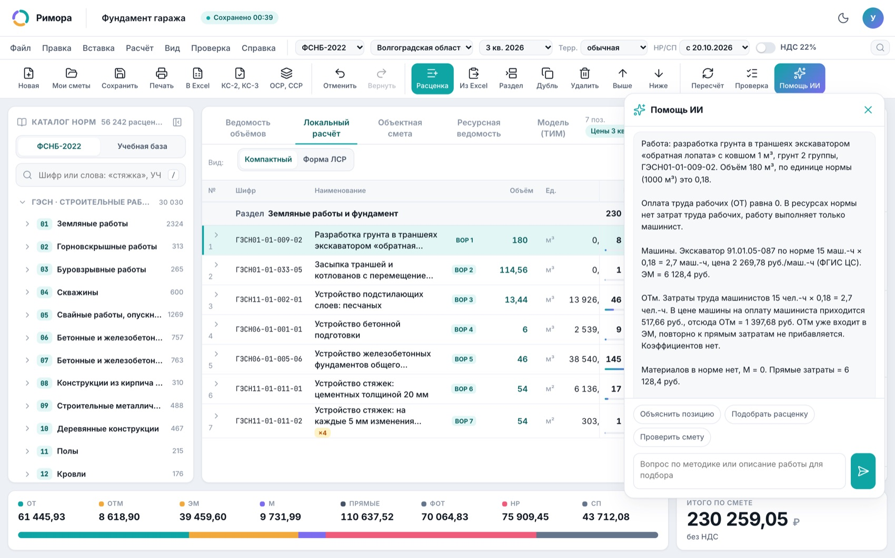
Кнопка Помощь ИИ (Alt I) открывает панель справа.
- Объяснить позицию: откуда объём, из чего сложилась цена ресурсов, какие НР и СП.
- Подобрать расценку: по описанию работы. Предложение можно сразу добавить в смету.
- Проверить смету: на что обратить внимание в смете целиком.
- Вопрос по нормативам: строка внизу панели. Помощник знает Методику 421/пр, приказы 812/пр, 774/пр, 325/пр, 332/пр и технические части всех 118 сборников ГЭСН, ГЭСНм, ГЭСНп, ГЭСНр и ГЭСНмр. Ответ приходит со ссылкой на пункт и номер приказа, под ответом список источников.
Числа в ответах помощника программа сверяет со своим расчётом. Справа вверху панели видно, какая модель отвечает. Метка «без ИИ» значит, что помощник сейчас недоступен, например нет интернета. Тогда позицию объясняет сама программа, без нейросети. В версии по ссылке у помощника есть дневной лимит вопросов.
21Выходные формы и ресурсная ведомость
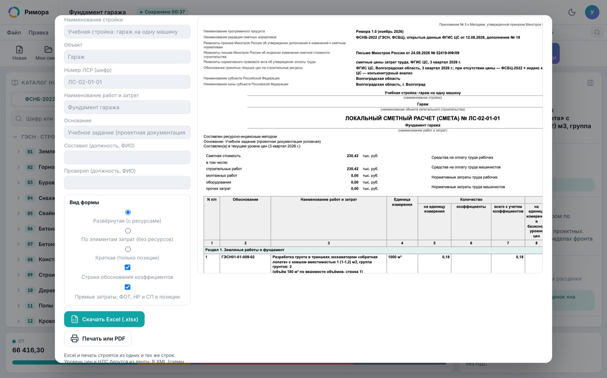
Слева реквизиты: стройка, объект, номер ЛСР, основание, составил, проверил. Справа предпросмотр ЛСР по форме приложения 3 к Методике 421/пр. Вид формы:
- развёрнутая, с ресурсами;
- по элементам затрат, без ресурсов;
- краткая, только позиции.
Галочками включаются строки обоснования коэффициентов и строки прямых затрат, ФОТ, НР и СП в позиции. Внизу две кнопки: Скачать Excel (.xlsx) и Печать или PDF. Excel, печать и вид «Форма ЛСР» на экране строятся из одних данных и совпадают до копейки.
Ресурсная ведомость
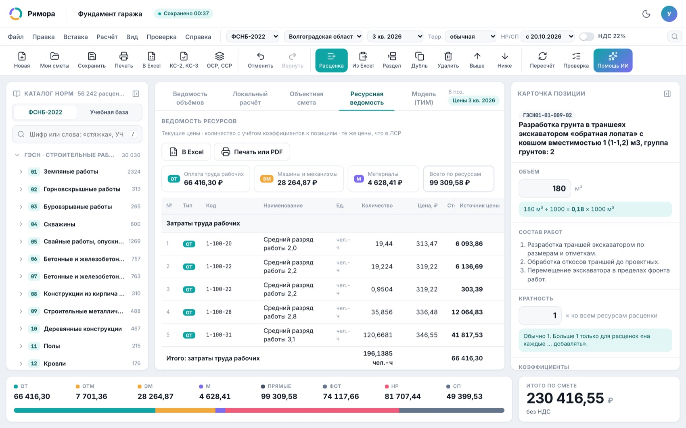
Все ресурсы сметы по группам ОТ, ЭМ, М, оборудование, перевозка: расход, цена, источник цены, номера позиций. Сумма сходится с прямыми затратами ЛСР. В Excel: Файл → Ведомость ресурсов в Excel.
22Акты КС-2 и справки КС-3
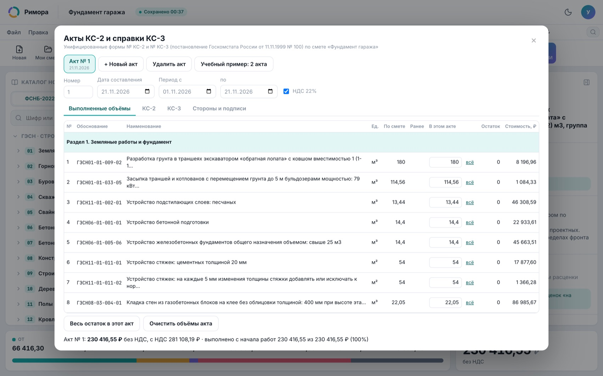
- Нажмите + Новый акт, задайте номер, дату и отчётный период.
- На вкладке «Выполненные объёмы» укажите объём по каждой позиции. Кнопка «всё» ставит весь остаток позиции, «Весь остаток в этот акт» делает это для всей сметы.
- На вкладке «Стороны и подписи» заполните заказчика, подрядчика, договор и подписантов.
- Скачайте КС-2 и КС-3 в Excel или распечатайте.
Актов по одной смете может быть сколько угодно. Стоимость в акте считается долей по каждому элементу затрат нарастающим итогом, поэтому сумма всех актов при полном выполнении равна смете до копейки.
23ОСР и ССРСС
Файл → Объектный и сводный расчёты или Alt O. В окне вкладки «Данные стройки», «ОСР», «ССРСС» и «НМЦК». Расчёт по НЦС и смета на проектные работы открываются в главном окне (разделы 24 и 25).
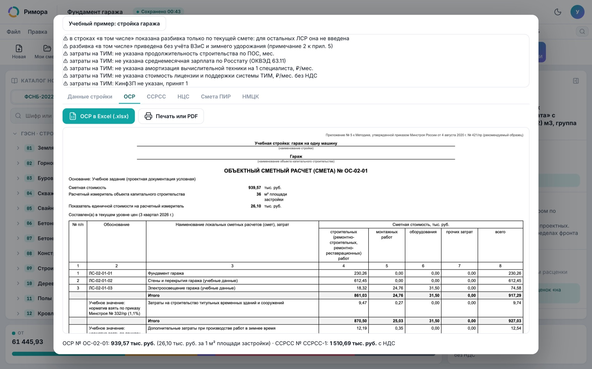
- Данные стройки. Стройка, объект, заказчик, подписи и поля пояснительной записки: вид объекта и работ, продолжительность, территория, код назначения, главный показатель, источник финансирования. Здесь же затраты на ТИМ (раздел 16).
- ОСР по приложению 5. Текущая локальная смета первой строкой, другие ЛСР объекта добавляются суммами. Графы строительные, монтажные, оборудование, прочие. Проценты временных зданий и зимнего удорожания.
- ССРСС по приложению 6: главы 1–14, строительный контроль, резерв на непредвиденные (с полем «письмо ГРБС с процентом»), НДС. Суммы в тысячах рублей с двумя знаками.

ОСР и ССРСС печатаются, выгружаются в Excel и в XML (раздел 27).
24Расчёт по НЦС-2026
Расчёт открывается в главном окне: Новая смета → Расчёт по НЦС-2026 или кнопка НЦС над каталогом. Слева сборники и таблицы НЦС, щелчок по таблице добавляет строку расчёта. В центре строки и итог, справа параметры выбранной строки, внизу итоги. Над таблицей вкладки «Расчёт по НЦС», «Форма расчёта» и «← Локальная смета». Расчёт нужен, когда проекта ещё нет, а стоимость строительства уже надо оценить: для НМЦК на проектные работы или для укрупнённого расчёта. Расчёт ведётся по формуле п. 97 Методики 314/пр:
С = [(Σ НЦС × М × Кпер × Кпер/зон × Крег × Кс) + Зр] × Ипр + НДС

- Выберите сборник в каталоге слева: в программе все 23 сборника НЦС-2026, от 81-02-01-2026 «Жилые здания» до 81-02-23-2026, 6 857 показателей. Уровень цен 01.01.2026, базовый район Московская область. Под выбором сборника показаны правила его технической части («Особенности сборника»).
- Укажите субъект и ценовую зону. Коэффициенты перехода Кпер и Кпер/зон подставятся по таблицам 1 и 2 сборника.
- Выберите территорию для Крег.1 (если вариант один, программа подставит его сама), при необходимости Крег.2 (снегоборьба) и Кс = 1,03 для сейсмичности 7–9 баллов.
- Добавьте строку: таблица сборника и мощность М (квартиры, м², места). Показатель между значениями таблицы интерполируется. За пределами таблицы до 10 % берётся крайний показатель, экстраполяции нет.
- Включите поправочные коэффициенты из технической части. Коэффициенты больше 1 в одной группе складываются дробными частями, меньше 1 перемножаются, группы перемножаются между собой.
- Введите Ипр (индекс-дефлятор «Инвестиции в основной капитал») с обоснованием и Зр, если есть дополнительные затраты.
Галочка Взять результат как Сстр для сметы ПИР передаёт итог в смету на проектные работы как стоимость строительства (п. 136 Методики 707/пр). Программа напомнит, что показатель НЦС уже включает проектные работы, экспертизу, строительный контроль и резерв. Кнопка Учебный пример: школа в Краснодаре заполняет расчёт образцом.
Стоимость по НЦС получается в уровне цен 01.01.2026. В смете ПИР укажите индекс пересчёта в уровень цен нормативов затрат, иначе программа напомнит об этом.
Кнопки В Excel (.xlsx) и Печать или PDF выдают расчёт по НЦС.
25Смета на проектные работы
Смета открывается в главном окне: Новая смета → Смета на проектные работы или кнопка НЗ и СБЦ над каталогом. Слева нормативы затрат и справочники базовых цен, в центре строки сметы, справа карточка выбранной строки, внизу итоги. Над таблицей вкладки «Смета ПИР», «Форма 2п» и «← Локальная смета». Расчёт ведётся по Методике 707/пр. Итог можно сразу отправить в главу 12 ССР.

Способы расчёта
| Способ | Когда и как |
|---|---|
| По натуральному показателю | Цена = a + b·X по таблице справочника. Выберите справочник, таблицу, объект и стадию (П/Р), a и b подставятся по X сами. Если X за пределами таблицы, программа экстраполирует по формулам (8.2)–(8.4). |
| Процентом от стоимости строительства | База — итог глав 1–9 ССР этой сметы. Норматив интерполируется, коэффициент по п. 140, усложняющие факторы не применяются (п. 142). |
| Калькуляцией | По форме 3п: исполнители, трудозатраты, Ккв-уч (не больше 1,0). |
| Процентом от основных работ | Дополнительные работы по таблице 4.1, например сбор исходных данных. |
| Готовой суммой | Если цена уже определена другим документом. |
Справочники в программе: нормативы затрат 848/пр (жилищно-гражданские объекты, уровень 2021), 847/пр (сети инженерно-технического обеспечения), 51/пр (автомобильные дороги), 52/пр (газораспределение), 53/пр (водоснабжение и водоотведение), 343/пр (капитальный ремонт объектов инфраструктуры железнодорожного транспорта, уровень 2023), а также 828, 846, 849, 907, 911, 912, 479, 216, 383 и 837/пр. Справочники базовых цен: «Предприятия автомобильного транспорта» (уровень 2001), капитальный ремонт жилищно-гражданских объектов, противопожарная защита (уровень 1995), ИТМ ГОЧС, городской электротранспорт, связь, обмеры и обследования, агропромышленный комплекс, территориальное планирование. Справочники без деления на проектную и рабочую документацию считаются на 100 %. Если к уровню цен справочника в программе нет индекса, она предупредит и возьмёт Ипр из поля. Если в расчёте по НЦС включена галочка «Взять результат как Сстр для сметы ПИР», стоимость строительства для процента от Сстр берётся из расчёта по НЦС. Индекс изменения сметной стоимости проектных работ берётся по кварталу из писем Минстроя (IV кв. 2026: 1,75 к уровню 2021 и 7,38 к уровню 2001).
Как составить
- Добавьте строку: щёлкните таблицу в каталоге слева или нажмите кнопку нужного способа внизу таблицы.
- В карточке строки справа для натурального показателя выберите Справочник → Таблица → Объект → П/Р и введите X: площадь, мощность, число машино-мест.
- Добавьте коэффициенты из списка методики. Коэффициенты таблицы 5.1 складываются (п. 171), остальные перемножаются.
- Укажите долю по составу работ, если делается не весь объём проекта, и районный коэффициент (9.1), если он нужен.
Формы и глава 12
Кнопки Смета ПИР в Excel (.xlsx) и Печать или PDF выдают смету по формам 2п и 3п. Галочка «Итог сметы в главу 12 ССР» ставит итог в сводный расчёт, графа «прочие затраты». В НМЦК глава 12 попадёт, если отметить её среди глав, входящих в цену контракта (раздел 26).

Кнопка Учебный пример сметы ПИР заполняет смету гаража: по СБЦ 100 279 ₽, сбор исходных данных 2 006 ₽, калькуляция 134 597 ₽, итого 236 882 ₽ без НДС.
26НМЦК по приказу 841/пр
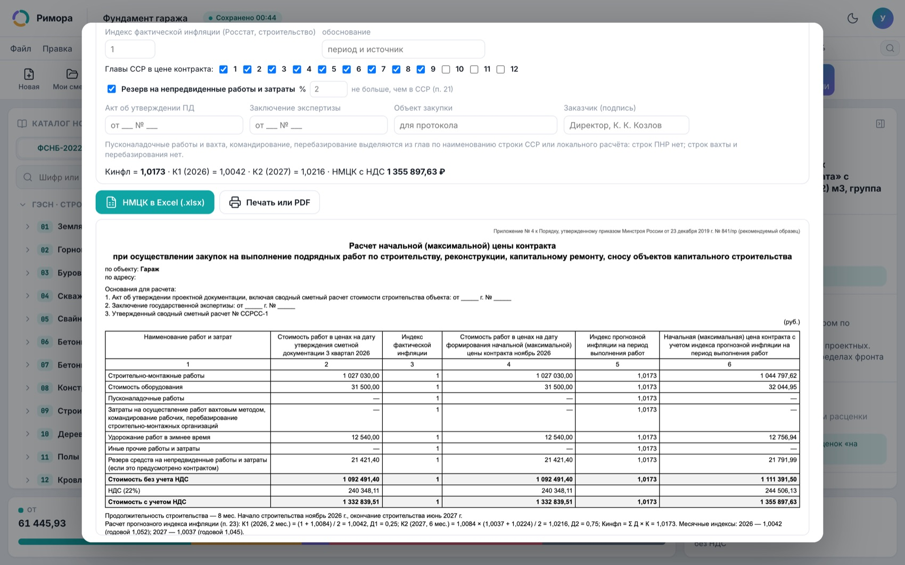

НМЦК считается от сводного сметного расчёта этого же окна в текущем уровне цен.
- Укажите дату определения НМЦК, начало работ и продолжительность по ПОС (по умолчанию из пояснительной записки).
- Проверьте индексы-дефляторы Минэкономразвития «Инвестиции в основной капитал» по годам: программа подставляет их из прогноза сама (2026 — 112,0; 2027 — 109,0; 2028 — 104,6; 2029 — 104,5). Свои значения (1,052 или 105,2) важнее подставленных. Укажите индекс фактической инфляции с обоснованием.
- Отметьте главы ССР, которые входят в цену контракта (по умолчанию 1–9), и резерв (не больше, чем в ССР, п. 21).
- Проверьте доли работ по годам и заполните реквизиты: объект закупки, заказчик, экспертиза.
Программа считает Кмес, Кпер по формуле 1.1, для работ дольше года коэффициенты по годам (п. 23) и Кинфл. Строки приложения 4: СМР, оборудование, пусконаладочные работы, вахта, зимнее удорожание, прочие, резерв, НДС.
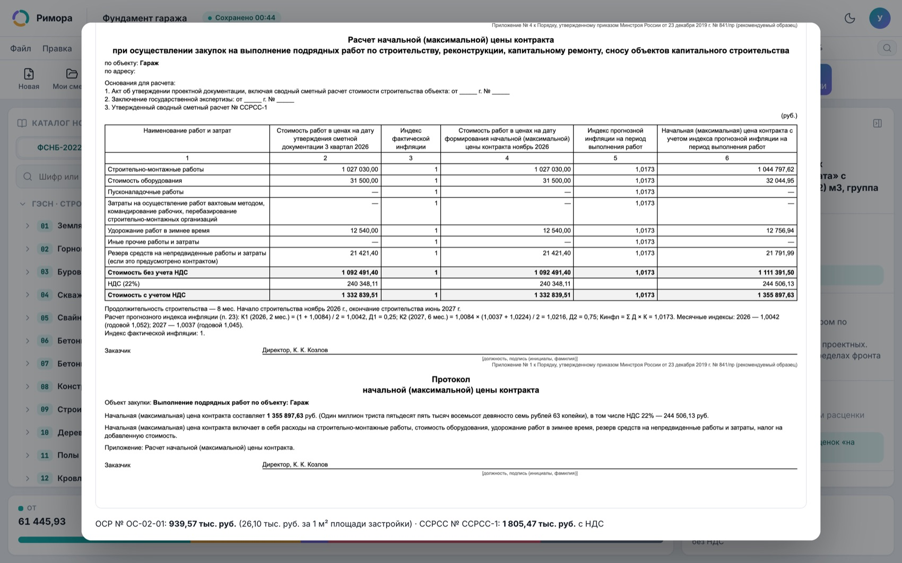
На печать и в PDF выходят расчёт по приложению 4 и протокол по приложению 1 с суммой прописью. Есть выгрузка в Excel.
27XML для экспертизы

| Что выгрузить | Где |
|---|---|
| ЛСР (ЛС РИМ 3.01) | Файл → Экспорт в XML |
| ВОР (QuantityTakeoff 3.01) | Вкладка «Ведомость объёмов» → XML ВОР |
| Пакет: ВОР, ЛСР, ОСР, ССРСС, пояснительная записка | Файл → Пакет XML для экспертизы (.zip) или кнопка внизу вкладки «Данные стройки» |

Перед выгрузкой программа проверяет смету: XML выгружается только в текущем уровне цен, позиции без объёма не выгружаются, пустые «Составил» и «Проверил» дают предупреждение. Если итог файла не совпал с итогом сметы, файл не скачивается.
В XML попадают реквизиты нормативов из ФРСН, письмо Минстроя квартала, код региона, коэффициенты с обоснованием, ресурсы с текущей и базисной ценой, вспомогательные материалы, оборудование, перевозка, ссылки на строки ВОР, данные модели IFC.
28Горячие клавиши
| Клавиши | Что делают |
|---|---|
| Ctrl K | Палитра команд и поиск расценок |
| / или Insert | Поиск в каталоге норм |
| Alt N | Новая смета |
| Ctrl O / Ctrl S | Мои сметы / сохранить |
| Ctrl P / Alt E | Выходные формы / Excel |
| Alt K | Коэффициенты на всю смету |
| Alt O | ОСР, ССРСС, НЦС, смета ПИР, НМЦК |
| Alt V | Вставка списка из Excel |
| Alt R | Раздел |
| Ctrl D / Del | Дублировать / удалить строку |
| Alt ↑ ↓ | Переместить строку |
| Ctrl C X V | Копировать, вырезать, вставить строки |
| Ctrl A | Выделить все строки |
| Ctrl F | Поиск по смете |
| Ctrl Z / Ctrl Y | Отменить / вернуть |
| F9 | Пересчёт |
| F7 / Shift F7 | Проверка / экспертиза сметы |
| Alt I | Помощь ИИ |
| Alt L | Вид «Форма ЛСР» |
Клавиши работают и в русской раскладке. На Mac вместо Ctrl нажимайте ⌘, вместо Alt ⌥. Полный список: Справка → Горячие клавиши.

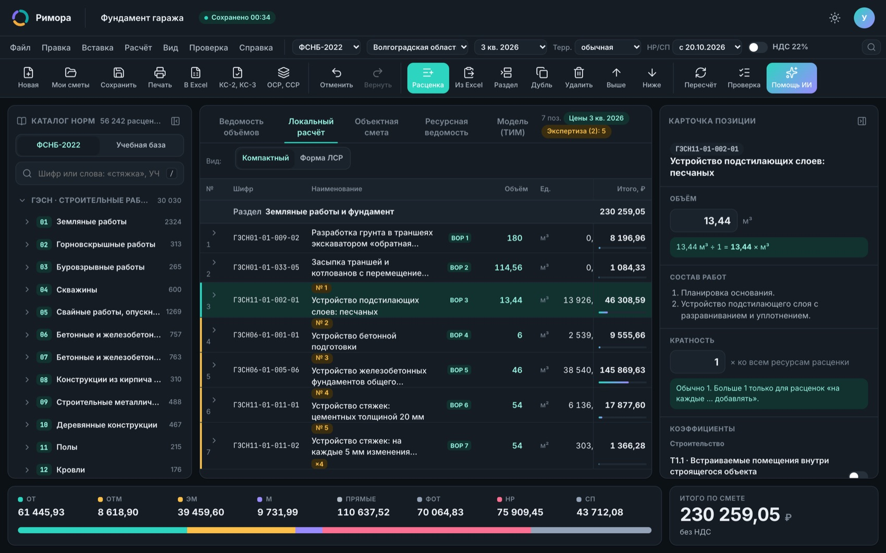
29Частые вопросы
Где хранятся мои сметы?
В браузере на вашем компьютере. Другой браузер их не увидит. Чтобы сметы были на всех устройствах, включите облако (раздел 4).
Почему у материала цена 0 ₽?
В зоне и квартале сметы нет ни цены, ни индекса группы. Такой материал считают конъюнктурным анализом (раздел 12).
Почему сумма отличается от другой сметной программы?
Чаще всего из-за редакции ФСНБ, квартала цен, перевозки без региональных цен или коэффициентов, применённых к перевозке. Откройте карточку позиции: там видно, из чего сложилась каждая сумма.
Можно ли работать без интернета?
Открытая программа считает в браузере. Без связи не загрузятся цены новой зоны или квартала и не будет работать Помощь ИИ. Облако отправит сметы, когда связь появится.
Куда писать замечания?
Ильдару, лучше со скриншотом и номером позиции. Если замечание касается конкретной сметы, приложите файл: «Мои сметы → Текущую в файл».